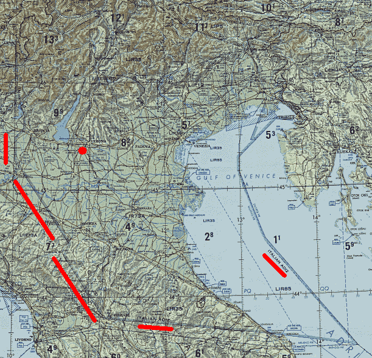
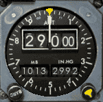
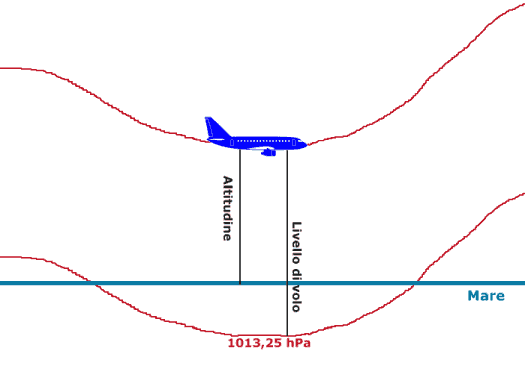
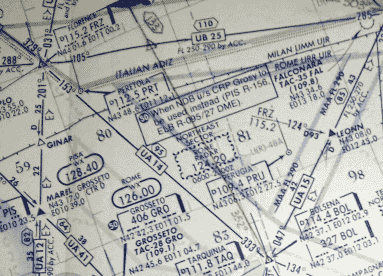

INDICE
ADIZ
L'ADIZ italiano (soppresso ormai da molti anni) era una zona dello spazio aereo delimitata a sud dal segmento che congiunge Ancona con Firenze, spingendosi al largo della costa adriatica, fino al confine dello spazio aereo Italia / ex Jugoslavia. Poi andava da Firenze verso nord-ovest salendo fino a circa Cremona e da lì a nord fino a Sondrio e al confine con la Svizzera.
Gli aerei che intendevano entrare nell'ADIZ dovevano rispettare particolari procedure d'identificazione al fine di consentire alla difesa aerea una migliore discriminazione del traffico aereo (ad esempio, dieci minuti prima dell'orario stimato d'ingresso, bisognava avvisare l'ente competente per zona).

La cartina evidenzia i confini dell'ADIZ italiano nel 1981.
Il cerchio rosso indica la posizione del TACAN di Villafranca (una
radioassistenza militare).
Ai fini della strage di Ustica, riveste un certo interesse il fatto che il TACAN di Villafranca (situato all'interno dell'ADIZ) fosse inoperativo già da una settimana (v. "Memoria Gamberini, Marini, Di Maria - 19 maggio 1999" pag. 23).
Interpolazione/estrapolazione
Lo scopo di questo paragrafo è descrivere in modo sufficientemente chiaro e semplice come vengono ottenuti i parametri atmosferici nominati in questo sito. Saranno, pertanto, evitati termini rigorosi di difficile comprensione in favore di termini più semplici, anche se un po' più approssimativi.
In termini informali e ai fini degli argomenti trattati in questo sito, l'interpolazione può essere definita come un procedimento matematico che consente di stimare il valore di una variabile tra almeno due punti noti ottenuti sperimentalmente. Ad esempio, se si conosce la temperatura atmosferica a 1 km di quota e a 2 km di quota, tramite l'interpolazione è possibile avere una stima della temperatura per una qualunque quota compresa tra 1 e 2 km.
Tramite l'estrapolazione, invece, si può stimare il valore di una variabile all'esterno dei punti noti. Continuando con l'esempio di prima, l'estrapolazione consente di stimare la temperatura al di sotto di 1 km di quota o al di sopra di 2 km.
Queste due tecniche vengono impiegate per molteplici scopi in questo sito: calcolo della rotta e velocità degli aerei, evoluzione dell'azimut dei detriti del DC-9 dopo l'abbattimento, stima dei parametri meteorologici.
In questo paragrafo verrà tralasciata la banale interpolazione di una variabile in funzione dell'altra, in quanto non presenta alcuna particolarità ed è ampiamente trattata in termini rigorosi in moltissimi siti web.
Lo scopo di questo paragrafo, invece, è spiegare la particolare tecnica d'interpolazione ed estrapolazione usata per stimare i parametri meteo lungo la rotta del volo IH870.
Il punto di partenza per il calcolo della posizione dell'IH870 è rappresentato dal tabulato radar di Ciampino, estrattore n° 3, dal quale si ricava la latitudine, la longitudine e il livello di volo del DC-9 in funzione dell'orario. Mentre il punto di partenza per la stima dei parametri meteo è rappresentato dai radiosondaggi storici archiviati nel sito University of Wyoming per le stazioni meteo di Ajaccio, Brindisi, Fiumicino, Milano, Trapani e Udine.
Per quasi tutte le stazioni sono disponibili 4 radiosondaggi: ore 0 e 12 del 27 e del 28 giugno; per la stazione meteo di Trapani sono disponibili soltanto 2 radiosondaggi: uno per le 12 del 27 giugno e l'altro per le 12 del 28 giugno.
I radiosondaggi vengono pubblicati come mostra l'esempio seguente:
-----------------------------------------------------------------------------
PRES HGHT TEMP DWPT RELH MIXR DRCT SKNT THTA THTE THTV
hPa m C C % g/kg deg knot K K K
-----------------------------------------------------------------------------
1011.0 10 19.0 12.0 64 8.78 340 13 291.2 316.4 292.8
1000.0 95 17.8 11.8 68 8.76 330 15 290.9 316.0 292.5
[omissis]
310.0 9175 -38.9 -70.9 2 0.01 250 140 327.3 327.4 327.4
300.0 9400 -39.9 250 143 329.0 329.0
250.0 10630 -45.3 250 134 338.6 338.6
Il significato di alcune colonne è evidente, ma per i dettagli si faccia riferimento a "Description of Sounding Columns".
Le colonne che tornano utili per gli argomenti trattati in questo sito sono: PRES, HGHT, TEMP, MIXR, DRCT e SKNT. Da questi valori vengono anche ricavate l'umidità relativa (che è riportata in tabella come RELH) e la densità dell'aria, accuratamente calcolata tenendo conto del vapore acqueo in essa contenuto.
Dando uno sguardo alla tabella, ci si rende subito conto che è necessario usare l'interpolazione per stimare i valori tra i punti noti e l'estrapolazione per stimare MIXR al di sopra dell'ultimo punto noto (310 hPa nel caso d'esempio), anche se sarebbe più corretto parlare di regressione esponenziale.
Tutto ciò premesso, il problema consiste nello stimare il valore dei suddetti parametri in un dato punto nello spazio e ad una data ora. La risoluzione del problema si basa su di un'idea molto semplice:
- da ognuno dei radiosondaggi si ricava un profilo verticale continuo tramite una spline cubica (tra le moltissime possibilità, la più indicata è la spline Akima per le sue caratteristiche di stabilità in presenza di repentine variazioni dei parametri); per MIXR, come detto, è anche necessaria una regressione esponenziale (usata la tecnica dei minimi quadrati);
- dai 2 o 4 rilievi temporali disponibili per ogni stazione meteo, tramite la spline di Akima si ricava il valore di ogni parametro per l'orario voluto, compreso tra le 12 del 27 giugno e le 0 del 28 giugno; per Trapani (con 2 soli rilievi temporali) si può solo procedere con un'interpolazione lineare;
- l'ultimo passo consiste nel combinare tutti i valori dello stesso parametro ottenuto da tutte le stazioni meteo (dando ad ogni stazione un peso o importanza in base alla distanza dal punto voluto) per stimarne il valore in una data posizione (quota, latitudine e longitudine).
Supponiamo di voler calcolare la quota sul livello del mare corrispondente al livello di volo 290.
La prima cosa da fare è calcolare la pressione presente nell'atmosfera standard (o aria tipo) a 29000 ft. Si può usare uno dei moltissimi siti che permettono di fare semplici calcoli: "1976 Standard Atmosphere Calculator" o direttamente la formula presentata nella pagina in lingua inglese di Wikipedia (la prima); sostituendo i valori numerici a tutte le costanti, si ottiene:
p = 1013,25 x [(288,15 - Hpres x 0,3048 x 0,0065) / 288,15]5,2558
Per l'altitudine di pressione Hpres = 29000 ft si ottiene p = 314,86 hPa (ci sono piccole differenze tra il sito e la formula dovute a piccole differenze tra le costanti usate). Ciò significa che l'autopilota fa variare la quota dell'aereo sul livello del mare per mantenere costante la pressione atmosferica esterna all'aereo pari a 314,86 hPa.
Questo è il valore di pressione da usare per interpolare tutti gli altri parametri. Anziché calcolare i parametri in funzione di PRES, è anche possibile calcolarli in funzione di HGHT; si può usare la soluzione più idonea al problema da risolvere.
I valori ottenuti con questo procedimento non possono essere presi come valori assolutamente certi, in quanto derivano da un'interpolazione. L'attendibilità di questo procedimento non deve essere valutata in senso assoluto, ma deve essere valutata prendendo in considerazione le condizioni meteo presenti nella zona interessata dai calcoli ad un dato orario; se i parametri variano in modo non troppo brusco, il procedimento dà risultati attendibili, mentre se la variazione è molto rapida (per esempio a causa di un ciclone presente nell'area d'interesse), il procedimento è scarsamente affidabile.
Fortunatamente, le carte meteo relative al bacino del Mediterraneo mostrano una situazione molto tranquilla, soprattutto per l'assenza di cicloni; c'è vento forte, ma la variazione di velocità è molto lineare nel senso della latitudine ed è praticamente costante nel senso della longitudine; ciò vale anche per la pressione e la temperatura. Pertanto, si può ritenere che il procedimento adottato darà risultati attendibili.
Livello di volo
Gli aerei di linea dispongono di due tipi di altimetro: barometrico e radio.
Il radioaltimetro mostra la distanza (in piedi) dell'aereo dal terreno che sta sorvolando. Quello del DC-9 arriva ad un massimo di 2500 ft ed è pertanto utilizzato obbligatoriamente solo durante la fase di avvicinamento finale.
L'altimetro barometrico, invece, viene usato in tutte le fasi del volo.
In questo tipo d'altimetro, i piloti impostano una data pressione di riferimento nelle apposite finestrelle e l'altimetro segna la quota alla quale si trova l'aereo rispetto alla pressione impostata dai piloti. Le finestrelle, di solito, sono due: una mostra la pressione impostata in centinaia di Pascal (o millibar) e l'altra in pollici di mercurio (inHg).
La regolazione di questa pressione di riferimento è abbastanza articolata e non interessa la nostra trattazione. E' sufficiente sapere che se i piloti impostano il valore della pressione atmosferica presente al livello del mare (valore comunicato dai controllori d'area o di torre), la quota indicata dall'altimetro è quella sul livello del mare, mentre impostando un particolare valore di pressione, pari a 1013,25 hPa o 29,92 inHg, la quota indicata dall'altimetro divisa per cento si chiama livello di volo (abbreviato in FL). Questa quota è di fondamentale importanza, in quanto viene usata in tutta la fase di crociera per mantenere la separazione verticale tra i vari aerei.

Esempio di altimetro simile a quello del DC-9 regolato sulla superficie isobarica standard (1013 mb). Questa è la regolazione mantenuta durante il volo in crociera.
In basso a sinistra è presente il pomello "BARO" tramite il quale il pilota varia all'unisono i valori presenti nelle due finestrelle.

L'immagine mostra la differenza tra altitudine e livello di volo.
Durante la fase di crociera, l'autopilota fa variare in continuazione la quota dell'aereo rispetto al livello del mare in modo tale da farlo volare seguendo la linea rossa, che rappresenta una superficie isobarica (punti in cui la pressione atmosferica è costante).
Se supponiamo che l'aereo stia volando a FL290 (come il DC-9 Itavia nella prima fase della crociera), la linea rossa più in alto indica una pressione atmosferica pari a 314,86 hPa, che corrisponde, appunto, ad una quota di 29000 ft (8839 m) in aria tipo (atmosfera fittizia per la quale sono tarati gli altimetri).
Procedendo nel suo volo, l'aereo, andando verso destra, sale di quota per mantenere costante la pressione atmosferica di volo (cioè il livello di volo). Normalmente, durante la crociera a livello di volo costante, l'aereo sale o scende molto lentamente rispetto al livello medio del mare, ma quando si attraversano aree cicloniche caratterizzate da pressioni particolarmente basse, la velocità verticale dell'aereo può arrivare a decine di piedi al minuto (anche 100 ft/min), tuttavia sono comunque velocità verticali piccolissime e impercettibili, anche da parte dei piloti.
Radiale di una radioassistenza
La radiale è una semiretta immaginaria che ha origine da un VOR o da un TACAN. La radiale 0 o 360 è diretta verso il nord magnetico, la radiale 90 verso est, 180 verso sud e 270 verso ovest. In realtà, l'allineamento dello 0 con il nord magnetico avviene molto saltuariamente, ogni 5/10 anni, per cui l'allineamento è solo approssimativo (questo, comunque, non costituisce alcun problema per il mantenimento della giusta rotta, in quanto i piloti devono limitarsi ad impostare le radiali indicate sulle carte).
I piloti possono seguire la giusta rotta sia allontanandosi da una radioassistenza che avvicinandosi. Per fare questo, viene impostata la radiale da seguire su uno strumento chiamato HSI e l'autopilota fa virare l'aereo per intercettare e mantenere la radiale impostata.

L'immagine mostra una cartina aeronautica nella quale si vedono le radiali delle varie radioassistenze che formano l'asse delle aerovie.
Ad esempio, un aereo che vola lungo l'A-14 (indicata con la "U" di "upper" perché la cartina riguarda lo spazio aereo superiore, cioè al di sopra del livello di volo 245) verso sud nel tratto Firenze - Bolsena imposta 153 nell'HSI sintonizzato su FRZ (115,2 MHz) e imposta la stessa frequenza anche in un altro strumento chiamato
RMI. Nell'RMI viene, inoltre, già impostata la frequenza del VOR di Bolsena. Così facendo, non appena questo viene ricevuto, i due indici dell'RMI si sovrappongono indicando il perfetto mantenimento dell'asse dell'aerovia; un indice punta verso FRZ (in coda) e l'altro verso BOL (in prua).
A circa metà strada, il pilota cambia la frequenza dell'HSI sintonizzandolo su BOL, lasciando sempre 153 (333 - 180).
Nel caso in cui le radioassistenze non funzionino, tutto ciò non viene fatto e i piloti si limitano ad impostare una prua sull'autopilota che non funziona più in modalità navigazione (mantenendo una radiale), ma in modalità mantenimento prua. E' ovvio che in presenza di vento, l'aereo non vola più al centro dell'aerovia e se il vento è variabile, l'aereo serpeggia disordinatamente senza sapere dove si trova esattamente. In tal caso, i controllori radar hanno un aumento del carico di lavoro, poiché sono loro a dover assegnare la prua agli aerei per farli stare all'interno delle aerovie.
Unità di misura
Molte delle grandezze riportate nelle varie pagine di questo sito sono espresse con le unità di misura originali (ad esempio, le miglia nautiche per i tabulati radar e i piedi per le quote degli aerei).
Il fattore di conversione da miglia nautiche (nm) a chilometri è 1,852; 1 nm = 1,852 km.
Il fattore di conversione da piedi (ft) a metri è 0,3048; 1 ft = 0,3048 m.
Da queste unità di base vengono derivate altre unità di misura.
La velocità orizzontale di un aereo, ad esempio, viene espressa in nodi (kn), corrispondenti a miglia nautiche percorse in un'ora; quindi il fattore di conversione tra nodi e chilometri all'ora è sempre 1,852: 1 kn = 1,852 km/h.
Un'altra unità derivata è il gradiente di salita o di discesa degli aerei che può essere espresso sia in gradi che in percentuale, ma più spesso si usa l'unità ft/nm, cioè si esprime la perdita o il guadagno di quota espressa in ft per ogni miglio nautico che l'aereo percorre. Se, ad esempio, un aereo sta scendendo con un gradiente di 350 ft/nm, significa che ogni 1852 m percorsi in orizzontale perde 106,68 m di quota e cioè sta scendendo con una pendenza pari a 106,68 / 1852 x 100 = 5,76%; calcolando, invece, l'arcotangente di 106,68 / 1852, otteniamo un angolo di discesa pari a circa 3,3 gradi.
Un'altra unità di misura comunemente usata in aviazione è il ft/min per esprimere la velocità verticale di un aereo (positiva se sale, negativa se scende). Se, ad esempio, un aereo sale a 2000 ft/min, significa semplicemente che guadagna 609,6 m di quota ogni minuto.
La pressione atmosferica (usata per conoscere la quota attraverso la lettura dell'altimetro barometrico) veniva espressa in millibar (mb), unità di misura non più usata, in quanto non appartenente al sistema internazionale di unità di misura (SI). Da molti anni la pressione atmosferica viene espressa in centinaia di Pascal (hPa), comunque esattamente corrispondente al millibar.